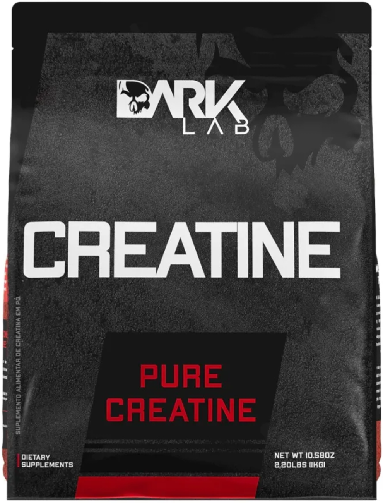

Creatina Monohidratada Dark Lab: benefícios, qualidade e pontos positivos
📅 Publicado em 19/07/2026
A Creatina Monohidratada Dark Lab é um suplemento desenvolvido para praticantes de atividade física que desejam melhorar o desempenho nos treinos, aumentar a força e favorecer o ganho de massa muscular. Produzida com creatina monohidratada e sem adição de saborizantes, ela se destaca pela simplicidade da composição e pelo bom custo-benefício. Disponível em diferentes tamanhos de embalagem, a Creatina Dark Lab atende desde quem está começando a suplementação até quem faz uso contínuo e busca opções com maior rendimento. Mas será que ela realmente vale a pena? Nesta análise reunimos os principais pontos para ajudar na sua decisão.
O que é a creatina?
A creatina é uma substância produzida naturalmente pelo organismo e também encontrada em alimentos como carnes e peixes. Nos músculos, ela participa da produção rápida de energia durante exercícios de alta intensidade e curta duração. Quando utilizada regularmente, a suplementação de creatina pode contribuir para melhorar o desempenho físico, favorecer o ganho de força e auxiliar na recuperação entre séries de exercícios, desde que esteja associada a uma alimentação equilibrada e à prática de atividade física.
Composição
A Creatina Dark Lab possui uma composição simples, contendo creatina monohidratada como ingrediente principal. Por ser um suplemento sem sabor, pode ser misturada facilmente com água, sucos ou shakes, permitindo que cada pessoa utilize da forma que preferir.
Qualidade
A creatina monohidratada é a forma mais estudada cientificamente e também a mais utilizada por atletas e praticantes de musculação em todo o mundo. A proposta da Dark Lab é oferecer um produto simples, focado na suplementação diária, sem ingredientes desnecessários que possam alterar sua finalidade.
Benefícios
Quando consumida regularmente e associada ao treinamento adequado, a creatina pode proporcionar benefícios como:
- aumento da força muscular.
- melhora do desempenho em exercícios de alta intensidade.
- auxílio no ganho de massa muscular.
- melhora da recuperação entre séries.
- maior capacidade para manter intensidade durante os treinos.
Os resultados costumam aparecer de forma gradual e variam conforme fatores como alimentação, rotina de treinos e constância no consumo.
Solubilidade
Assim como acontece com praticamente todas as creatinas monohidratadas, parte do pó pode permanecer no fundo do copo após a mistura com água. Essa característica é normal e não representa perda de qualidade do suplemento.
Como consumir
O fabricante recomenda o consumo diário conforme as instruções presentes na embalagem. A creatina deve ser utilizada de forma contínua, inclusive nos dias sem treino, para manter níveis adequados nos músculos. Em caso de dúvidas, é recomendável buscar orientação de um nutricionista ou outro profissional habilitado.
Embalagens disponíveis
A Creatina Dark Lab é comercializada em diferentes tamanhos de embalagem, permitindo que o consumidor escolha a opção mais adequada ao seu perfil de consumo. Quem utiliza creatina diariamente pode optar por embalagens maiores, enquanto usuários ocasionais podem preferir versões menores.
Especificações
- Creatina monohidratada.
- Sem sabor.
- Disponível em diferentes tamanhos de embalagem.
- Fácil de misturar com água, sucos ou shakes.
- Produto destinado a adultos praticantes de atividade física.
- Não contém glúten (conforme informações do fabricante).
Pontos positivos
- ✅ Composição simples.
- ✅ Creatina monohidratada.
- ✅ Sem sabor.
- ✅ Disponível em diferentes tamanhos de embalagem.
- ✅ Fácil de incluir na rotina diária.
- ✅ Boa relação entre custo e benefício.
Pontos negativos
- ❌ A creatina monohidratada não dissolve completamente em água.
- ❌ Os resultados dependem da prática de exercícios e do uso contínuo.
- ❌ Não substitui uma alimentação equilibrada.
Conclusão
A Creatina Monohidratada Dark Lab é uma boa opção para quem procura um suplemento simples, com composição baseada em creatina monohidratada e disponível em diferentes tamanhos de embalagem. Seu principal destaque está na proposta de oferecer um produto voltado para a suplementação diária, sem ingredientes desnecessários e com uma boa relação entre custo e benefício. Como acontece com qualquer suplemento alimentar, os resultados dependem da regularidade do consumo, da alimentação e da prática de exercícios físicos. No geral, a Creatina Monohidratada Dark Lab é uma alternativa interessante para quem deseja incluir a creatina na rotina de treinos e busca um produto confiável para complementar a alimentação.
Onde comprar
Transparência
Esta análise foi elaborada com base em informações oficiais, especificações técnicas e materiais disponibilizados publicamente. O Análise Certa busca fornecer informações claras e confiáveis para ajudar na decisão de compra.